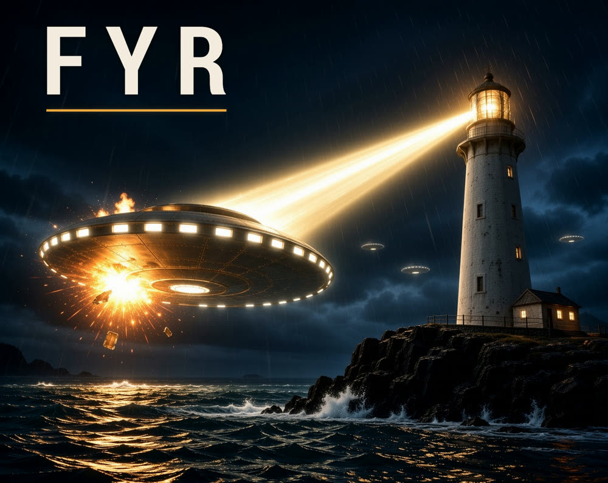

Day 3 Saturday 14 November
The video finds its music and its voice, and the entry gets its cover
1 picture 1 failure 7 min read
Checkpoint The final gameplay video chosen, 22:40
This entry covers Saturday from about 20:35 to 22:45 and was written at 22:45 from the commits and the video's records. All of it is about the gameplay video, the entry's cover and this site; the game itself did not change.
The music, three times
The developer liked the first cut's picture but not its sound: the game's own sound jumped at every one of the 21 cuts. He asked for a trailer's feel, the music leading and the game's sound well under it.
- First try. A music agent made 14 takes with ACE-Step 1.5 XL from two prompts and picked the two with the widest dynamics: a quiet, ticking start, a slam on ACTION!, a dead stop when time stops, and a much bigger climax for the mothership. A second agent mixed them, with the game's sound 16 dB under the music and crossfaded at every cut.
- Second try. Of the first set's takes, the most even one (loudness range 3.3 LU) went under the whole video at one level. It dips 8 dB while time is stopped and eases 4 dB down for the ending. It was made from takes already on disk, in about five minutes.
- Third try, kept. The developer remembered a music prompt from his own prompt library, written in October, before the jam: a Nordic orchestral trailer score with a lone hardanger fiddle. The Official Rules (7h) allow prompt libraries prepared before the contest, so the prompt was reused word for word. It is declared in the entry's declaration, and only its words are from before the jam. Six new takes were rendered on the developer's graphics card in about 40 seconds. The two most even were levelled with ffmpeg so that their loudness stays within about ±1.5 LU after the opening, with no audible pumping (the beat-rate gain wobble measured 0.13 dB). The kept take is in D minor at 120 bpm, and a bar line lands on ACTION!.
PromptEpic Nordic cinematic trailer score, instrumental. Opens with dark wind-swept drones, low cello and a lonely hardanger fiddle melody;…68 words
Epic Nordic cinematic trailer score, instrumental. Opens with dark wind-swept drones, low cello and a lonely hardanger fiddle melody; pulsing staccato strings, ticking percussion and rising swells build storm tension; then massive war drums, deep brass braams, soaring horns and full orchestra crash in like waves on a lighthouse. Cold, heroic, defiant. Polished Hollywood trailer production, huge hall reverb, deep sub impacts, final hit with long reverb tail.
The keeper speaks
The developer also wanted spoken narration. It is the keeper's own voice, the older one cast this afternoon, made with Ming-3.0 TTS in director mode. Each line had his fixed persona sentence and one short direction for its delivery. There are eight lines in first person, timed to their shots, with no film puns:
- "They come. Every night."
- "From my hut... I plan the defence."
- "Then out I go. To the light."
- "Gun. Laser. And the great lens."
- "When it gets too much... I stop the night. And change the plan."
- "Every fourth night... something bigger."
- "At dawn... I walk home."
- "And watch it all... again."
There were 114 takes over three rounds. The kept ones were ranked by how lively they measured and by how close they stay to his voice (0.81 to 0.91 against his anchor, with 0.75 the floor), and none was stretched in time. Most takes came out flat, so the second and third rounds spelled out rises, falls and pauses in the directions. Under his voice the music dips by about 8 dB. The first setting dipped it by 12 dB and the music all but vanished under each line.
Transitions
A third pass replaced the 21 plain cuts with an editor's ones, and every shot keeps its place, so the music and the voice stay in sync:
- soft dissolves through the hut and the walk;
- the fight's cuts moved onto the music's beats;
- three short flashes: the lens shaft's first hit, the rocket's arrival and the break-up;
- a dip to black after the ship falls into the sea;
- slow dissolves through the walk home, the projector, the chair and the film on the wall.
An independent check matched every frame against the recordings and found two faults. One was a three-frame jump in the game's own camera just before a dissolve; the other was a smeared first frame in the hut. Both were fixed. It also found that the older cutting code rounded its times, which left the second half of the earlier cuts one or two frames behind their own sound. The new path is frame-exact. The developer chose this version.
On this page
The picture at the top of the front page now carries a play button. The video opens in a dialog with the log's own player: a scrubber, the volume, full screen, the keyboard, and an Auto quality that picks the 1080p or the 720p copy for the screen and the connection. The two copies are 33.8 and 15.9 MB, served from this site like everything else; the page asks no other server for anything. It was checked in a real browser at desktop and phone sizes: opening and closing, focus coming back, the page not scrolling behind it, and no request leaving the site.
The cover
For the entry's page the developer wanted a poster. It shows the lighthouse in the storm, with a ship beside it struck by the great lens's beam and an explosion just bursting from its lower left, and a big FYR. It was made with the image model, MOSS-Image with its 4-step turbo LoRA, from the prompt below: six seeds in about 40 seconds, and the developer chose the sixth. The picture itself has no text. FYR is set over it in the engine's own Roboto Bold Condensed, widely tracked with a gold hairline, as on this page.
Told plainly: this is key art, not the game. The model drew a generic silver saucer and a smooth white tower, not FYR's bronze Carrier or its grey stone lighthouse. The gameplay video and every other picture in this log come from the game itself.


PromptCinematic night key art for a video game, a single dramatic film still: on the right, a tall old whitewashed stone lighthouse on a jagged…233 words
Cinematic night key art for a video game, a single dramatic film still: on the right, a tall old whitewashed stone lighthouse on a jagged black basalt rock out at sea, in a violent storm with heavy slanting rain; its lantern room at the top blazes white-gold, and from the great brass Fresnel lens a thick, burning shaft of golden-white light shoots out to the left across the dark sky and strikes a large alien flying saucer hovering over the sea beside the tower. The saucer is a wide, flat bronze disc with dark riveted hull plates and a rim of square bays that glow bright white all around its edge. Where the burning beam hits, a fiery explosion is just bursting out of the saucer's lower left side: a blinding white-orange core, flames and sparks and torn plating flying, the first instant of the blast. At the foot of the lighthouse a small stone keeper's hut with warm lit windows. Dark teal storm sea with white foam breaking on the rocks, low heavy clouds, a few small saucers far off in the clouds. Deep blue night, high contrast, the lamp, the beam and the explosion are the brightest things. A large calm empty area of dark sky on the upper left of the picture for a title. Photorealistic, highly detailed, wide angle, cinematic lighting, volumetric light in the rain, 35mm film still.
Smaller changes on this site
- The game's name on the front page is now set like the video's title.
- The page has a new icon: the lighthouse, its beams in the same gold.
- The road beside the developer's note is drawn larger, with its last stretch running through Saturday to Sunday's finish.
Tools in this entry
Claude Code. ACE-Step 1.5 XL for the music; Ming-3.0 TTS for the keeper's narration; MOSS-Image for the cover; HyperFrames for the video's captions; ffmpeg to cut, level and mix.